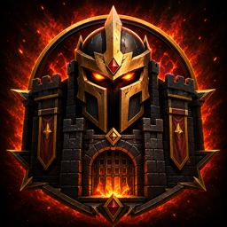
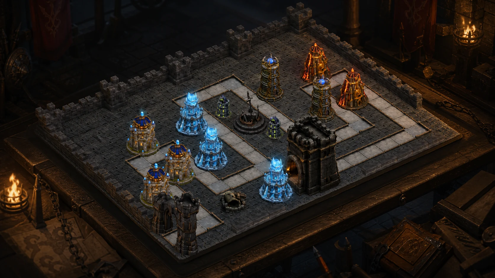
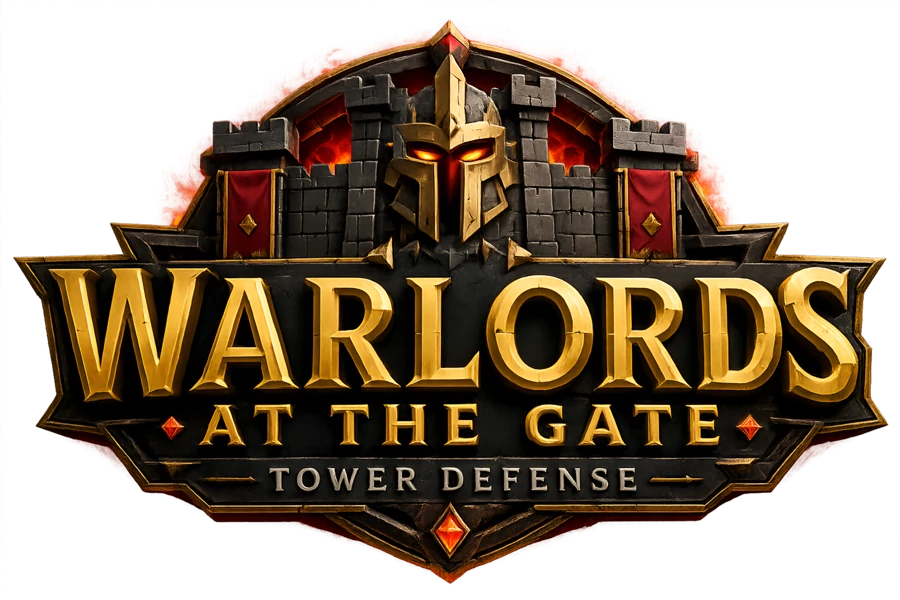
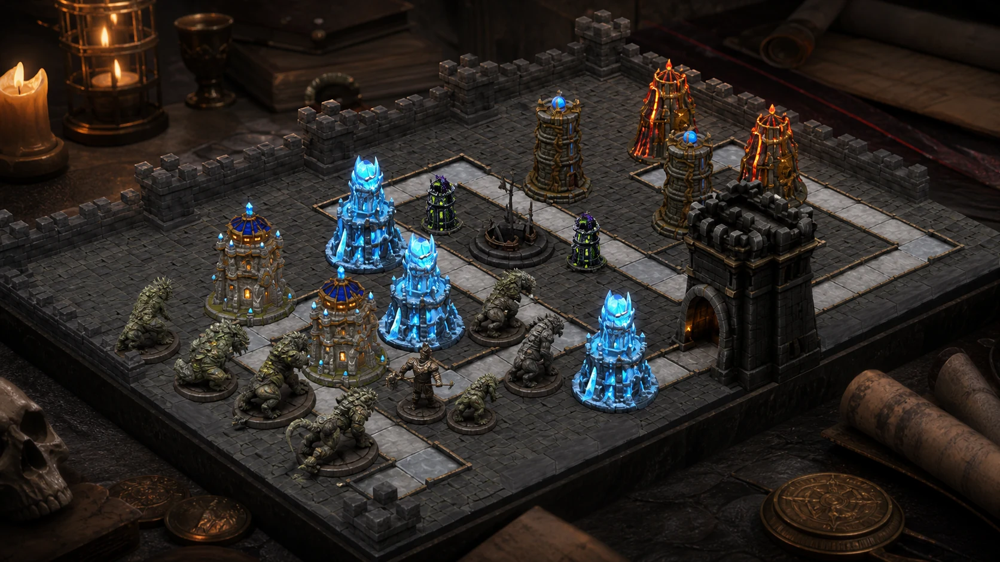
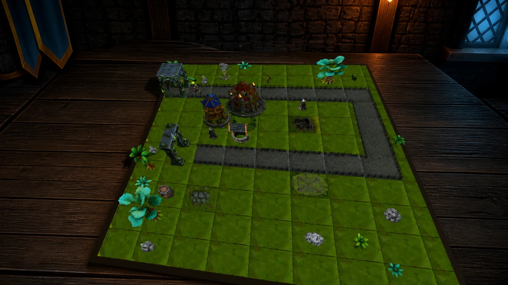

Tower Master
Place, upgrade, sell, and redirect five distinct towers. Freeze runners, break formations, poison armor, and chain lightning through clustered enemies.

Warlords at the Gate

A mixed-reality tabletop tower defense game where every road, tower, and beast fits inside your room.
Paid VR game. PICO release in preparation.
Command both sides
Learn the battlefield through a three-act campaign, then reverse the war in offline Skirmish against an adaptive opponent.
Place, upgrade, sell, and redirect five distinct towers. Freeze runners, break formations, poison armor, and chain lightning through clustered enemies.
Spend threat across seven battlefield roles. Combine armor, speed, healing, and swarms, then commit active commands when the defense is vulnerable.

Offline Skirmish
Every campaign battlefield supports both roles. Defend against an AI Beastmaster or lead the assault against an AI Warden, with no account or network match required.
A living war table
Clear roads, meaningful tower positions, and distinct elemental silhouettes keep every decision visible from seated or standing play.

Designed for tabletop VR
Play seated or standing without artificial locomotion.
Use tracked controllers or hand tracking to command the board.
Use passthrough or switch to the opaque fantasy war room.
Choose Standard or Relaxed difficulty and earn battle medals.
Campaign and offline Skirmish. English, French, German, and Spanish interface text. No ads or in-app purchases.